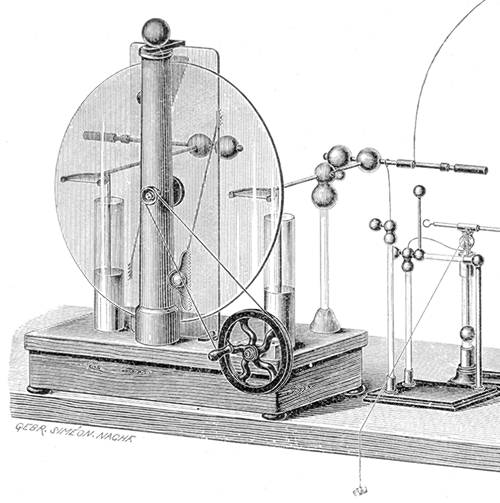
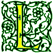
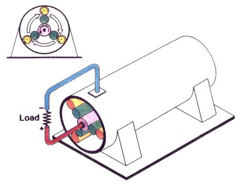
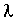
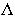
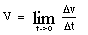

Signs for technical/specialized vocabulary
David Bar-Tzur
Links updated monthly with the help of LinkAlarm.


Leyser machine1; Lorente electrostatic generator.2
EXPLANATION OF THE GLOSSING SYSTEM
(to understand how I describe the signs in this dictionary).
For content knowledge of how to use the physics terms in context, see Guided tutorial in physics for interpreters.
For negotiating and developing temporary signs, see Preparation and sign negotiation
For vocabulary lists to determine helpful signs for a specific discipline, see Vocabulary lists by topic.
- lab
- L-A-B.
- labia majora
- VAGINA + (2h)G-CL, POs away, follow shape of vagina with pc to show large, outside lips.
- labia minora
- VAGINA + (2h)G-CL, POs away, follow shape of vagina with hu to show small, inside lips.
- labor
- ~ (as in "~ union")
- WORK.
- ~ (during childbirth)
- L-A-B-O-R.
- laboratory
- L-A-B.
- Ladino
- SPANISH JEWISH LANGUAGE.
- ladybug
- LADY INSECT. For a QuickTime movie of this sign, see ASL browser - ladybug.
- Lag B'Omer
- (Israeli sign) (2h)[S], DH behind NDH; DH moves > signer while changing into [tight 8]; DH changes into [4] while NDH moves forward. (< custom of shooting flaming arrows into a body of water.)
- laity
- Depends on context. The general meaning is people that are not part of religious orders, so it can be signed REGULAR PEOPLE, NOT. . . and then add whatever is meant to be excluded . . . PRIEST, RABBI, MINISTER, and so on.
- lake
- WATER + (2h)[L], POs down, FOs away, touch thumbs, move away, and touch thumbs again, describing a circle. For a QuickTime movie of this sign, see ASL browser - lake.
- Laman (LDS [Mormon])
- [L] touches near mouth and then cheek.
- Lamanites (LDS [Mormon])
- [L] touches near mouth and then cheek + GROUP.
- Lamaze
- L-A-M-A-Z-E.
- lambda
- lowercase ~, 
- (1) [3], PO towards, FO down. (2) (2h)[1], FOs up at angle, POs >lt;, meet at FTs to form angle indicated by shape of letter.
- uppercase ~,

- (1) [V], PO towards, FO down. (2) (2h)[1], FOs up at angle, POs ><, meet at FTs to form angle indicated by shape of letter.
- lambda baryon (0)
- NFOrms an uppercase lambda ([V], PO towards, FO down) and DH forms ZERO"superscripted".
- lambda resonance baryon (0)
- [V], PO towards, FO down + R-E-S-O-N-A-N-CE.
- lambert (deprecated)
- "L"
- Lamb of God
- LAMB FROM GOD.
- Lamentations [Heb. Eichah]
- L-A-M.
- laminar (non-turbulent) flow
- ~ towards the left)
- (2h)[4],
DHPO up, NDHPO down, FOs away, both hands move towards left side.
- ~ towards the right
- (2h)[4], DHPO down, NDHPO up, FOs away, both hands move towards right side.
- ~ upwards or downwards
- DHPO > NDS, NDPO > DS, with the appropriate movement.
- lamp (stage lighting)
- [O^], PO down, FO away, descends while opening into a [5^] and "shining" down on [B], PO down, FO > DS.
- landscape (fine arts)
- (PAINTING, PRINT, or whatever sort of art it may be) SHOW + COUNTRY~THEREABOUTS.
- landscaper
- (1) L->S-AREA. (2) PROPERTY AGENT.
- Lane, Harlan
- [H] taps thumbside against DS corner of mouth.
- lanthanum
- L-A. For more information on this and other elements, see The elements. And for fun, see Elements by Tom Lehrer. To see this song with captions, go to The Elements song by Tom Lehrer.
- lap joint
- (2h)[B], POs down, FOs away, overlap, then with the NDH still held in place, the DH [L] "welds" along the middle finger.
- Laplace transform
- "L" TRANSLATE.
- laptop
- (2h)[B], POs down, FOs ><, DH is held on top of NDH and twists open top slightly 2x.
- large impact hypothesis
- BIG + [S] strikes back hand of [B], PO down, FO > DS + HYPOTHESIS, where the last sign is [H] circles temple.
- large intestine
- C-CL shows path of large intestine higher in abdomen.
- large Magellanic cloud
- BIG M-A-G-E-L-L-A-N-I-C + (2h)5:-CL'fluffy cloud'.
- large scale integration
- L-S-I.
- larnyx
- [G] runs FTs down throat. For a QuickTime movie of this sign, see ASL browser - larnyx.
- larva
- INSECT + 1-CL, PO down, FO away, creeps up [B] to FT, PO up, FO away. For a QuickTime movie of this sign, see ASL browser - larva.
- lasagna, lasagne
- (2h)[B^], FOs up, POs ><, like the beginning of EQUAL, hands separate while FTS wave at each other.
- laser
- L-A-S-E-R.
- laser-induced fluorescence
- L-I-F.
- last-in-first-out
- L-I-F-O.
- Last Rites (Roman Catholic)
- Thumb of [A dot] makes cross on forehead + SICK.
- late-deafened
- OLDER, HIT* DEAF.
- latent heat
- "L".
- lateral (anatomy)
- [B], PO > NDS, FO away, rubs palm down side of torso.
- lateral bending
- Bend [S], PO away, FO up, > NDS, then >DS.
- lateral control arm
- NDH 3-CL'vehicle' and DH is G-CL which is draw across the NDH from above to show that the control arm is mounted laterally (parallel to signer's body).
- lateral flexion
- [S], PO > signer, FO up, is held with elbow bent and then the arm at the shoulder so that the FO ends up > NDS.
- Latin
- (1) [R] touches bridge of nose and then tip of nose.
(2) [H] touches bridge of nose and then tip of nose. (< nose protector of ancient Roman helmet.) For a QuickTime movie of this sign, see ASL browser - Latin.
- latte
- [L], PO away, FO up, circles on top of NDH [S], PO > DS, FO away, as if grinding.
- lava
- GROW + [O^] changes to [5] while flowing down side of [B]. For a QuickTime movie of this sign, see ASL browser - lava.
- lavaliere (microphone)
- [bX] holds mike to mouth, lips move as if speaking, and FT touch the lapel.
- law of conservation of matter
- LAW SAY TOTAL MATTER CHANGE, CAN'T.
- lawrencium
- L-R. For more information on this and other elements, see The elements. And for fun, see Elements by Tom Lehrer. To see this song with captions, go to The Elements song by Tom Lehrer.
- lay egg
- EGG but with single motion, that is, (2h)[H], POs towards, cross at midsection of fingers and separate until FOs are down.
- layer
- [G] runs along palm, FO away, to show layer of a substance. For a QuickTime movie of this sign, see ASL browser - layer.
- layout
- ~ (Diving)
- STRAIGHT.
- ~ (textual or pictorial)
- L-A-Y-O-U-T.
- layperson, laypeople
- Depends on context. The general meaning is a person/ people that are not part of religious orders, so it can be signed REGULAR PERSON/PEOPLE, NOT. . . and then add whatever is meant to be excluded such as . . . PRIEST, RABBI, MINISTER, and so on.
- lay up (basketball)
- [5:], PO up, FO away, moves upwards.
- L'chayim!
- (1) (2h)[C], PO > signer, clink knuckles together as if clinking glasses. (2) L-LIVE.
- lead
- P-B. For more information on this and other elements, see The elements. And for fun, see Elements by Tom Lehrer. To see this song with captions, go to The Elements song by Tom Lehrer.
- leaf
- NDH [1] holds FT against wrist of [5] while DH moves from side to side as if it were a leaf.
- leaf spring
- L-E-A-F + (2h)[O^], POs ><, are held at sides as if they were holding onto the ends of a flexible bar and then they move as if they were flexing it.
- league
- L-GROUP.
- Leah (Jewish)
- L-TIRED [< a Hebrew word meaning "weary" (of searching for a husband? Is that why her father Lavan tricked Yaakov into marrying her?)]
- leak
- ~ (general)
- DH [4], PO down (representing the flow) brushes against the back of NDH [B], PO towards (representing a surface).
- ~ (from a cylindrical object)
- DH [4], PO down (representing the flow) brushes against the back of NDH [C], PO towards (representing the surface of a cylinder). This can be modified through changing the classifier to show the shape of the thing the leak is coming from.
For animated gifs of these signs, see ASL browser - leak.
- least/lowest common denominator
- L-C-D.
- least/lowest common multiple
- L-C-M.
- least recently used
- L-R-U.
- least significant bit
- L-S-B.
- least significant digit
- L-S-D.
- leather
- [L] rubs tip of thumb, with slight twisting of wrist, against ND pectoral.
- leave me alone!
- (1) (2h)[A], POs ><, FOs away, move towards chest while opening to (2h)[5] and strikes it with the FTs. (2) [5] is held with FT away from signer and the hand twists slightly but rapidly (like a vibration) while "FISH" is mouthed.
- Lebanon (لبنان)
- (2h)[index, middle finger and thumb], POs away, FOs up, close repeatedly, like the ASL sign for NO while descending and separating. For a film of this sign, click on Lebanon - لبنان. (< cedar tree on flag.) To see the reference source for the sign(s) for this country or to look up other countries in the same geographical area, see Indigenous signs for countries. To find signs for cities within this country (some have no entries) see Indigenous signs for cities.
- Lebensborn
- Trace thunderbolt on upperarm.
- Leboyer
- L-E-B-O-Y-E-R.
- lector (Roman Catholic)
- READER.
- ledger
- ~
- L-E-D-G-E-R.
- post (to ~)
- (2h)[V], POs ><, move from one place to another while bending FTs, then releasing.
- left-click
- LEFT + [X] clicks on palm of ND [B] as if it were a key.
- left field
- L-F.
- left hemisphere (brain)
- LEFT B^-CL'sweep back @ lf rim of head'.
- left-justify
- LEFT + [B], PO > NDS, FO away, moves down on left side to show margin.
- (feel) left out
- FEEL (2h)[A], POs ><, FOs away, move towards chest while opening to (2h)[5] and strikes it with the FTs.
- legal
- LAW (POSS.).
- legal player
- (1) ALLOW PLAYER. (2) P-ALLOW PLAYER. (3) ALRIGHT PLAYER.
- legatee
- L-E-G-A-T-E-E.
- legend
- (2h)[L], POs > signer, FOs ><, move forward from DS shoulder while circling around each other. For a QuickTime movie of this sign, see ASL browser - legend.
- legend key
- L-E-G-E-N-D- K-E-Y.
- legislation
- L-MEMBER PAPER.
- legislative
- L-MEMBER + POSS.
- legislature
- L-MEMBER. For a QuickTime movie of this sign, see ASL browser - legislature.
- Lehi (LDS [Mormon])
- L-E-H-I.
- legislature
- L-MEMBER. For a QuickTime movie of this sign, see ASL browser - legislature.
- lehn
- READ TORAH DURING WORSHIP.
- leisure
- (2h)[L], FOs ><, tap thumbs against chest twice. For a QuickTime movie of this sign, see ASL browser - automatic.
- lemon
- L-SOUR, where thumb contacts thumb. For a QuickTime movie of this sign, see ASL browser - lemon.
- lemonade
- Thumb of [L], PO > NDS, FO away, touch chin and then HS changes to an [S) and squeezes several times. For a QuickTime movie of this sign, see ASL browser - lemonade.
- Lemuel (LDS [Mormon])
- L-E-M-U-E-L.
- length
- (1) LONG. For a QuickTime movie of this sign, see ASL browser - length. (2) HOW-MUCH LONG? (3) "L".
- Lenin, Vladimir
- The FTs of [G] stroke the beard. (< his
VanDyke.)
- lens
- ~
- (1) L-E-N-S. (2) PICTURE FOCUS, where second sign is (2h)[C] if focusing tube is large and (2h)[F] if it is small, are held like a tube with DH closer and twisting in order to focus. For a QuickTime movie of this sign, see ASL browser - lens.
- concave ~
- DH [B], PO > NDS, FO away, rubs palm up and down along the concave part of NDH [B^].
- concave-concave ~
- (2h)[B^], POs ><, FOs up, held together to show both sides are convex.
- concave-convex ~
- (1) NDH [B^], PO > DS, FO up, DH [G] has thumb follow the curvature of NDH to show one side of the lens is concave and one side is convex. (2) NDH [B^], PO > DS, FO up, shows the concave side and DH [B^], PO > DS, FO down, is held next to the NDH to show the convex side.
- converging ~
- L-E-N-S (MAKE LIGHT) FOCUS.
- convex ~
- L-E-N-S, NDH [B^], PO > NDS, FO away, rubs palm up and down against the backhand of DH [B^], PO > NDS, FO up.
- convex-convex ~
- L-E-N-S, (2h)[B^], POs <, > NDS, FO away, hands are crossed at wrist and backhands touch.
- diverging ~
- L-E-N-S (MAKE LIGHT) (2h)B-CL'fan out'.
- plano-concave ~
- NDH [B], PO > DS, FO up, shows the planar side and DH [B^], PO > NDS, FO up, is held next to the NDH to show the convex side.
- plano-convex ~
- NDH [B], PO > DS, FO up, shows the planar side and DH [B^], PO > DS, FO down, is held next to the NDH to show the convex side.
- lens cap
- [5:], PO > NDS, FOs up, taps on thumbside of [C], PO away, FO up.
- Lent
- (1) [L] draws thumb across lips. (< the closing of the lips in a fast, since Lent is a time that some people abstain from something enjoyable as penance.) (2) Thumb of [L], FO up, draws a cross on the forehead.
- leptons
- L-E-P-T.
- Lesbian
- (1) [L], FO > ND side, touches chin with FT of index finger. (2) The same as (1) but touching the chin at a point between the index finger and the thumb. This is felt to be derogatory, For a QuickTime movie of this derogatory placement, see ASL browser - Lesbian.
- lesion
- [V], PO > NDS, FO away, cuts at tip of index finger.
- less
- REDUCE, that is, (2h)[B], POs ><, FO><, DH above NDH and DH descends slightly and quickly. For a QuickTime movie of this sign, see ASL browser - less.
- (is) less than
- (2h)[B^], POs ><, FOs up, FTs touch, then moves in an downward arc that approaches the signer. E.g., "two is less than three."
Translation: TWO@lf MORE-THAN THREE@rt. Note: Try and keep the numbers in the right position in relation to the number line. Spatializing the TWO and the THREE in the same place muddies the concept. Also if you are referring to everything that is greater than a certain number, you want to show its as being horizontally greater than the number so add, GREATER-THAN-'to the right', that is, the hands start out like NEXT-TO, but the dominant hand keeps moving while wiggling the fingers to show everything that is to the right.
- (is) less than or equal to
- LESS-THAN #OR EQUAL
LESS-THAN------------->
- lettering
- LETTER"each", that is, (2h)[A dot], thumb of DH moves from the lips to thumb tip of NDH, PO > signer, FO > DS, and strikes it several times while both hands move > DS.
- letters-of-administration
- PAPER O-F CONTROL.
- letters testamentary
- L-E-T-T-E-R-S T-E-S-T-A-M-E-N-T-A-R-Y.
- lettuce
- [5:] holds palm against temple and rotates. For a QuickTime movie of this sign, see ASL browser - lettuce.
- level (instrument)
- (2h)[bC], POs ><, FOs away, touch FTs then separate and with NDH held in place, DH [F], PO > NDS, FO away, jiggles left and right to show the movement of the bubble in the middle of the instrument.
- lever
- (2h)[S], POs down, are held together, then DH moves > DS, rises and falls as if operating a lever. For a QuickTime movie of this sign, see ASL browser - lever.
- Levi
- L-E-V-I. (Heb) "assistant minister (to God)."
- Levite
- JEWISH-PRIEST ASSISTANT, where the first sign is: The hands are held with thumbs touching, POs face away from signer, and the fingers are held together but split between the middle and ring fingers, like Mr. Spock on Star Trek (Leonard Nemoy is a cohen and got the gesture from this one which is used to bless the people during holidays).
- Leviticus [Heb. V'yikra]
- L-E-V.
- liabilities (accounting)
- "L"
- liabilities (legal)
- OWE.
- Liberal
- (1) POLITICS, LEFT POSS.++. (2) L-SAFE. For a QuickTime movie of this sign, see ASL browser - liberal.
- liberate
- (1) DH [B] lifts upwards and off from contacting [S], PO > DS while mouthing "off". (2) SAVE*. For a QuickTime movie of this sign, see ASL browser - liberate.
- Libya (ليبيا)
- FT of [B] stroke cheek without bending. For a film of this sign, click on Libya - ليبيا. To see the reference source for the sign(s) for this country or to look up other countries in the same geographical area, see Indigenous signs for countries. To find signs for cities within this country (some have no entries) see Indigenous signs for cities.
- license
- ~
- (2h)[L], POs away, FOs up, tap thumbs.
- ~ expired
- LICENSE END(v).
- ~ revoked
- (2h)[L], POs away, FOs up, touch thumbs and DH twists downwards while thumbs remain in contact.
- lid (marijuana)
- ~
- Lexicalized fingerspelling: [ILY] - [I] - [D with pinkie extended]. (2) (2h)[C], POs away, FOs up, are held side by side and separate.
- ~ size (whole)
- [C] grasps [Bb], PO > signer, FO > DS, and travels along it while still lightly grasping it to show the size of the lid.
- ~ size (partial)
- (1) [C] grasps [Bb], PO > signer, FO > DS, but the index finger is held up at an angle to the other fingers or is curled under thumb, and the DH travels along the remaining fingers while still lightly grasping them to show the size of the lid. (2) As in (1), but now the middle finger as well as the index finger are separated or curled.
- Lidell Movement-Hold
- "M" "H".
- life everlasting
- LIVE FOREVER.
- lift off (rocket)
- [R] blasts off from [B], PO up or down. For a QuickTime movie of this sign, see ASL browser - blast-off.
- lift up (Relgion)
- (1) (2h)[5], POs up, are raised high. For an animated gif of this sign, see Animated dictionary of religious signs - Deaf Missions: Exalt. (2) ADVANCED, that is, (2h)[B^], POs ><, FOs up, arc > signer a bit then move up in a definite movement. For an animated gif of this sign, see Animated dictionary of religious signs - Deaf Missions: Exalt.
- light activated silicon controlled rectifier
- L-A-S-C-R.
- light adaptation
- EYES + (2h)F-CL are held at eyes, and then fingers curled tightly shut to show pupils contracting.
- light beam
- To show the direction of light beam use the O^->5-CL as in "sunshine".
- light board
- (1) [O^], PO down, FO away, descends while opening into a [5^] + (2h)[F], POs down, FOs away, alt. pull switches backwards and forwards. (2) [O^], PO down, FO away, descends while opening into a [5^] + B-RECTANGLE.
- light dependent resistor
- L-D-R.
- light emitting diode
- L-E-D.
- light meter
- [C dot], PO > NDS, FO away, clicks thumb like a stopwatch.
- light plot (stage lighting)
- [O^], PO down, FO away, descends while opening into a [5^] + PLAN (v).
- light pollution
- CITY LIGHT INFLUENCE"th".
- lightning
- [1] makes a zig-zag in the air.
- lightning bug
- LIGHT BUG + [5], PO > NDS, opens and closes while moving > NDS. For a QuickTime movie of this sign, see ASL browser - lightning bug.
- lights! (on!, Theater)
- (2h)[O^], PO down, FO away, descend while opening into a (2h)[5^].
- liko (stage lighting)
- L-I-K-O.
- limb
- TREE + with TREE still held in place, NDH [G] surrounds and traces two fingers upwards. For a QuickTime movie of this sign, see ASL browser - limb.
- limbic system
- L-I-M-B-I-C SYSTEM.
- lime
- [L] cuts down [S], PO towards, FO > DS, with thumb. For a QuickTime movie of this sign, see ASL browser - lime.
- limit (the ~ as x goes to n), for example, 
- This is read, "V equals the limit of delta v over delta t as time goes to zero." Translation: "V" EQUAL LIMIT FOR TRIANGLE "V" B-CL'shows fraction bar' TRIANGLE "T" WHILE TIME ARRIVE"step by step" ZERO. "step by step" is a modulation where instead of the DH "arriving" at the NDH in one movement, it starts and stops to emphasize the "approach".
- limits of integration
- INTEGRAL LIMIT + (2h)INDEX'point to points where the limits would be written'
- limp
- (2h)[1], FOs down. The right hand moves forward in a circular motion as if limping.
- Lincoln, Abraham
- [L] taps thumb against temple. For an animated gif of this sign, see ASL browser - Lincoln.
- lines (in a play)
- (1) LINE is repeated while descending. (2) SENTENCE is repeated while descending.
- linear
- (1) L-I-N-E-A-R. (2) SHAPE LIKE LINE.
- linear density
- Represent lowercase lambda (), if this is the symbol being used: (1) [V], PO towards, FO down. (2) (2h)[1], FOs up at angle, POs ><, NDFT meet at the second joint of the dominant finger.
- linear equation
- EQUATION, EXPLAIN LINE.
- linear expansion
- (2h)[I], POs > signer, FOs ><, are held like the start of LINE, and separate but with an upward arc with pc.
- linear function
- FUNCTION, EXPLAIN LINE.
- linear predictive coding
- L-P-C.
- line driver
- L-D.
- lined up
- Use classifiers to show this relationship. For example, use (2h)[B], POs ><, FOs up, and move them alt. left and right until they line up for a 2D object and (2h)[I], POs > signer, FOs u><, and move them alt. to and fro until they line up for a 1D object.
- line feed
- L-F.
- line out (baseball)
- [B^], PO away, FO up, moves away sharply + [A dot], PO > NDS, FO up, moves backwards over shoulder.
- line printer
- L-P-T.
- liner (stage make-up)
- (2h)[bO], DH underlines mouth, NDH underlines NDS eye, then DH underlines DS eye.
- line rehearsal
- (1) LINE is repeated while descending + PRACTICE. (2) SENTENCE is repeated while descending + PRACTICE.
- lines per inch
- L-P-I.
- lines per minute
- L-P-M.
- line-up
- ~ (n, Sports)
- LIST.
- ~ (v)
- Use classifiers to show this relationship. For example, use (2h)[A], POs ><, FOs away, NDH is held in place and DH which is at first placed next to it either moved in a straight line away to show things lined-up tightly or hops away in upper arcs to show things that are not close to one another for 3D objects. (2h)[B], POs ><, FOs up, and move them alt. left and right (or up and down) until they line up for a 2D object. (2h)[I], POs > signer, FOs u><, and move them alt. to and fro until they line up for a 1D object.
- linguistics
- (2h)[L], POs down, FOs away, hands separate while closing to (2h)[S]. For a QuickTime movie of this sign . For a QuickTime movie of this sign, see ASL browser - linguistics.
- Linguistics of Visual English
- L-O-V-E.
- link, linkage
- ~ (n)
- (2h)[5] are held close and interlink twice as (2h)[F].
- ~ (v)
- (2h)[5] are held at some distance and interlink as (2h)[F].
- lint
- DIRTY + (2h)alt.PICK"off shirt". For a QuickTime movie of this sign, see ASL browser - lint.
- lipliner
- [bO] underlines mouth.
- lipreading
- (1) [V:], PO > signer, circles mouth. (2) [V^], PO > signer, moves FT from one side of the mouth to the other.
- lipstick
- [bO] applies lipstick moving > DS, then > NDS, each time following shape of lips.
- liqueur
- (1) Hold [G] to lips and tilt head back without removing it until the head returns to normal. Some people extend the little finger, (2) SWEET + (1).
- liquid
- L-VOTE, that is, [L]. FO up, taps thumb against thumb of [O], PO away.
- liquid crystal display
- L-C-D.
- liquid metallic hydrogen
- LIQUID "H" BEHAVE LIKE METAL. LIQUID is L-VOTE, that is, [L]. FO up, taps thumb against thumb of [O], PO away.
- listen, listening
- ~ (auditory - by ear)
- (1) (2h)[3], POs ><, FOs up, thumbs are held at ears and fingers (not thumbs) wiggle. (2) DH is cupped to DS ear.
- ~ (visual - by eye)
- (2h)[3], POs ><, FOs up, thumbs are held at eyes and fingers (not thumbs) wiggle.
- ~ (tactile - by touch)
- DH [3] is held at palm of NDH [B], PO down, FO away, and DH fingers (not thumb) wiggle.
- list serv, list server
- LIST S-E-R-V.
- litany
- ~ (figurative, general)
- LONG-LIST, that is, (2h)[O^], POs > signer, NDH is above and touches DH; both hands open to (2h)[5] while DH descends.
- ~ (Religion)
- (1) PRAY TAKE-TURNS'leader and congregation'. (2) PRAY LONG-LIST. LONG-LIST is (2h)[O^], POs > signer, NDH is above and touches DH; both hands open to (2h)[5] while DH descends.
- liter
- "L"
- literal
- ~ (alphanumeric)
- LETTER SELF-INDEX.
- ~ (numeric)
- NUMBER SELF-INDEX.
- ~ (word-for-word)
- WORD"each".
- literally
- WORD"each".
- literature
- L-I-T.
- liter per second
- "L", then hand descends and signs "S".
- lithium
- L-I. For more information on this and other elements, see The elements. And for fun, see Elements by Tom Lehrer. To see this song with captions, go to The Elements song by Tom Lehrer.
- litigant
- (1) COMPLAIN* AGENT. Mouth "po" with first sign (2) AGAINST* AGENT. Mouth "po" with first sign
- litigate, litigation
- (1) COURT COMPLAIN* and mouth "po". (2) COURT AGAINST* and mouth "po".
- liturgy
- (1) (2h)[L], POs down, FOs away from signer, touch thumbtips and ascend. (2) (2h)[L], POs down, FOs away from signer, cross index fingers at midfinger and ascend. (3) (2h)[L], POs away, FOs away from signer, touch thumbtips and ascend. (< from the sign MASS. )
- live together, living together (as man and wife)
- LIVE TOGETHER, M-W.
- liver
- L-I-V-E-R.
- llama
- (Bolivian Sign) [horns], PO > NDS, hand nods slightly.
- load
- ~ (a computer with data)
- DH [O^] is inserted in between the FT of [L], PO down, FO away.
- ~ (engineering)
- An inversion of the sign SUPPORT: Knuckles of [S], PO > signer, FO down, push down on [S], PO > signer, FO > DS, from above.
- loaded (on drugs)
- [L] slaps palm against the inside of the arm opposite the elbow.
- load resistor (RL)
- R L"subscripted".
- lobes (brain)
- (2h)alt.5:-CL touch FT to lf and rt front sides of top of head, then lf and rt back sides.
- lobster
- (1) (2h)[V], FOs down, are held at sides and perform scissor actions while moving forward. For a QuickTime movie of this sign, see ASL browser - lobster. (2) (2h)[V], POs ><, FOs away, snap open and shut.
- local area network
- L-A-N.
- localization
- SET-UP"each".
- local group (Astronomy)
- LOCAL GROUP, where the first sign is DH [5], PO down, rubs on thumb side of NDH [S] below it.
- local maximum
- LOCAL (see above) MAXIMUM.
- local minimum
- LOCAL (see above) MINIMUM.
- local oscillator
- L-O.
- locker room
- (2h)[V], POs > signer, FOs up, DHFT strikes NDHFT from palm side + ROOM.
- locus
- ~
- L-O-C-U-S.
- ~ of all points equidistant from two given points
- L-O-C-U-S INCLUDE WHAT? TWO POINT+ (2h)[curled F]-CL'describe points', #ALL POINT"each" THEMSELVES EQUAL DISTANCE, bC-CL'draw ellipse'.
- The ~ of all points equidistant from a given point
- L-O-C-U-S INCLUDE #ALL POINT"each" THEMSELVES EQUAL DISTANCE FROM CENTER, bC-CL'draw ellipse'.
- log (journal)
- (1) L-O-G. (2) [B^], PO > NDS, FO away, taps little finger side against palm of [B], PO up, FO away.
- log (make an entry in a journal)
- O^], taps FT against palm of [B], PO up, FO away, as it travels down it.
- log (wood)
- [B], PO away, FO away, chops near elbow of NDH [5], PO > signer, FO up + (2h)[C], POs away, FOs up, separate.
- logarithm
- ~ (general)
- L-O-G.
- anti~
- A-N-T-I-L-O-G.
- natural ~
- L-N.
- logarithmic (function)
- L-O-G.
- logger
- [B], PO away, FO away, chops near elbow of NDH [5], PO > signer, FO up + AGENT.
- logging
- [B], PO away, FO away, chops near elbow of NDH [5], PO > signer, FO up.
- logical unit number
- L-U-N.
- logic level field effect transistor
- L-2-F-E-T.
- log off
- SIGN-NAME, DISCONNECT. For a QuickTime movie of this sign, see ASL browser - log off.
- log on
- SIGN-NAME, CONNECT.
- Logos
- GOD HIS WORD.
- log to the base n
- L-O-G "N"'subscripted'.
- longitudinal control arm
- NDH 3-CL'vehicle' and DH is G-CL which is draw down the NDH from above to show that the control arm is mounted longitudinally (perpendicular to signer's body).
- longitudinal compression
- (2h)[5], POs ><, FOs away, rush together while cheeks puff.
- longitudinal rarefaction
- (2h)[5], POs ><, FOs away, rush apart while sucking in cheeks while traveling towards DS.
- longitudinal wave
- (2h)[5] performs compression and rarefaction as follows - (2h)[5], POs ><, FOs away, rush together while cheeks puff, then rush apart while sucking in cheeks while traveling towards DS.
- long range navigation
- L-O-R-A-N.
- long run
- LONG TIME-PERIOD.
- long shot
- (1) L-S. (2) DISTANT PICTURE.
- long wave
- L-W.
- look-back time (Astronomy)
- LOOK-BACK TIME, where the first sign is (2h)[U or V], look back over shoulder.
- look-up table
- L-U-T.
- loop
- ~
- (2h)[1], POs down, FTs touching, then DH moves in a circle, away from signer, then around back to original position several times.
- nested ~
- (2h)[1], POs down, FTs touching, then DH moves in a small circle, then around back to original position. Next DH moves in a large circle, then around back to original position. Repeat if necessary to convey the concept.
- loosen
- MAKE FLEXIBLE, where the second sign is [Bb] grasps NDH [B] and flexes the fingers.
- lord, Lord
- ~ (earthly)
- [L], PO down, touches NDS shoulder, then DS hip. For an animated gif of this sign, see Animated dictionary of religious signs - Deaf Missions: Lord.
- ~ (in reference to God)
- (1) [L], PO down, touches NDS shoulder, then DS hip. For an animated gif of this sign, see Animated dictionary of religious signs - Deaf Missions: Lord. (2) [L], PO down, touches NDS shoulder, then DS hip while NDH [B], PO > back, FO held up high. For an animated gif of this sign, see Animated dictionary of religious signs - Deaf Missions: Lord. (3) [L], PO > signer, touches heart and pronates while ascending Heavenward.
- Lord of Hosts
- LORD HIMSELF CONTROL ANGEL SCADS-OF.
- Lord's Supper
- (1) WINE~BREAD. (< food used during communion.) (2) LORD EAT++. (< the expression "the Lord's Supper".) For an animated gif of this sign, see Animated dictionary of religious signs - Deaf Missions: Lord's Supper.
- lose weight
- (1) (2h)[B], POs ><, FOs away, rush together while descending. (2) (2h)[U], POs down, FTs cross with DH on top and then both descend in steps while DH supinates multiple times.
- losing (sports)
- [A dot] points thumb down and descends.
- Lotus Intel Microsoft expanded memory specification (LIM, pronounced "lim")
- L-I-M.
- loudness (Music term for amplitude)
- HOW-MUCH NOISE"pow". Where the second sign is [1] touches ear, then (2h)[5], PO down, FO away, move antisymmetrically from side to side.
- loudspeaker(s)
- (1) A-M-P. (2) (2h)[5] are held at respective ears with POs > that ear and close repeatedly to (2h)[O^].
- louvers
- (2h)[Bb], POs > signer, FOs ><, DH held above and touching NDH, both hands pronate slightly twice while spreading and closing fingers like the sign VENETIAN-BLINDS.
- lovemaking
- (1) (2h)[1], FOs away, palms are rubbed in a circular motion against one another. Facial expression shows affection. (2) (2h)[ILY], FOs away, "palms" are rubbed in a circular motion against one another. Facial expression shows affection.
- low hormone, "low ho" (sexual reassignment surgery)
- L-O-W H-O.
- lower (a camera, verb)
- NDH [1] is held to the wrist of [B], PO away, FO up, and both move downwards.
- lowercase
- To show that a letter is lowercase (not capital), show the fingerspelled letter on the DH and place the NDH [G], PO > DS, FO up, next to the letter with hu. E.g, "lowercase D":
____hu
"D"--->
[G]-CL
- lower extremity
- (2h)[B], POs down, hands overlap completely at waist, NDH on top. DH descends to indicate the entire region from waist down.
- low frequency
- L-F.
- low noise amplifier
- L-N-A.
- low pass
- L-P.
- low verbal
- LOW WORD"each".
- loyal
- [L], PO towards, circles NDS upper chest and lands below shoulder.
- LSD
- ~
- L-S-D.
- take/ use ~
- Touch middle of tongue with [open 8].
- L'shana tovah (Tikataivu v'tikataimu!)
- (1) HAPPY NEW YEAR. (2) HOPE GOD WRITE-DOWN YOUR NAME FOR GOOD NEW YEAR.
- lubricant, lubrication
- (artificial) ~
- L-U-B-E.
- (natural female) ~
- VAGINA + (2h)[5^], POs up, NDH in neutral space and DH at mouth, both hands descend and close several times to (2h)[O^]. Note: the DH may start as a [1] or [W].
- (natural male) ~
- (1) PENIS + (2h)[5^], POs up, NDH in neutral space and DH at mouth, both hands descend and close several times to (2h)[O^]. Note: the DH may start as a [1] or [W]. (2)[S] is held at end of [1], representing the penis, and the index finger is flicked several times as if dripping.
- Luchot haBrit
- TEN COMMANDMENT STONE~CARVE-IN-STONE.
- Lucifer
- DEVIL.
- Luke (Κατὰ Λουκᾶν)
- L-U-K-E.
- lulav
- (2h)[A], press palms together and the hands are shaken to the left, then the right, over the shoulder, and forward. (< the palm branch shaken on the Jewish holiday of Sukkoth.)
- lullaby
- SING SLEEP. For a QuickTime movie of this sign, see ASL browser - lullaby.
- lumbar-spinal
- L-S.
- lumen
- L-M.
- lumen per square foot
- L-M, then hand descends and signs F-T SQUARED.
- lumen per square meter
- L-M, then hand descends and signs "M" SQUARED.
- lumen per watt
- L-M, then hand descends and signs "W".
- lumen-second
- L-M-S
- luminosity
- "L".
- luminous flux
- Same as the sign PSYCHOLOGY (some people start this sign with THINK, in which case I mean the later half of the compound.)
- lump (health science)
- ~ (general)
- [1] indicates a bump (lump) on the back of the hand. For a QuickTime movie of this sign, see ASL browser - lump.
- ~ (specific place)
- [1] indicates a bump (lump) in the specific area that applies or, if that is, awkward, [1] indicates a bump (lump) on the back of the hand and then point to specific place area.
- lump sum
- (2h)[5], POs ><, FOs away, DH above NDH, both hands moves towards signer while hands curl fingers. To see a series of stills of this sign, go to "inherit" ASL American Sign Language.
- lungs
- (2h)[B^], touch chest with FTs and travel up and down several times. For a QuickTime movie of this sign, see ASL browser - lung.
- lutetium
- L-U. For more information on this and other elements, see The elements. And for fun, see Elements by Tom Lehrer. To see this song with captions, go to The Elements song by Tom Lehrer.
- Luther, Martin
- (1) [L], FO up, strikes palm of NDH [B], PO > DS, FO up, 2x with thumb. (< nailing the complaints against the Church to a church door.) For a QuickTime movie of this sign, see ASL browser - Lutheran. (< nailing the complaints against the Church to a church door.) (2) [L], FO up, strikes chest with thumb.
- Lutheran
- (1) [L], FO up, strikes palm of NDH [B], PO > DS, FO up, 2x with thumb. For a QuickTime movie of this sign, see ASL browser - Lutheran. (< nailing the complaints against the Church to a church door.) (2) L,S-CHURCH.
- lux
- L-X.
- Luxembourg
- (2h)[1], DPO away from signer, FO up is held behind NDPO down, FO > DS. DH rotates so that PO moves > NDS and changes to [X] while touching NDH. To see the reference source for the sign(s) for this country or to look up other countries in the same geographical area, see Indigenous signs for countries. To find signs for cities within this country (some have no entries) see Indigenous signs for cities.
- luxury
- FANCY. For a QuickTime movie of this sign, see ASL browser - luxury.
- lyrics
- (1) MUSIC WORD"each". (w) MUSIC SENTENCE.
- lysomes
- L-Y-S.
Image credits
1. A. C. M. de Queiroz - Leyser machine.
2. A. C. M. de Queiroz - Lorente electrostatic generator.

Home
{kind=link}
{kind=link}